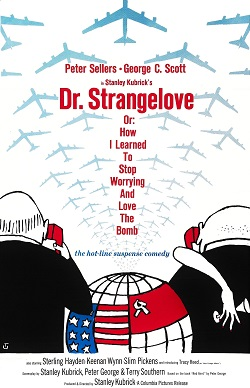

News & Entertainment Resource Website
Welcome to Emily's guide to the best sources for entertainment
About
Contact
Join our Network!
Entertainment Websites
Click this link to visit:
Netflix
Click this link to visit:
Spotify
Click this link to visit:
YouTube
News Websites
Click this link to visit:
New York Times
Click this link to visit:
New York Post
Click this link to visit:
CNN
Classic Entertainment Throwback: Dr Strangelove, a classic movie with modern implications

Watch Dr Strangelove Trailer Now
Listen to 'We'll Meet Again' by Vera Lynn Here
Read more on Dr. Stragelove Here
Would you like to provide feedback on our Entertainment Website?:
Reset
Submit